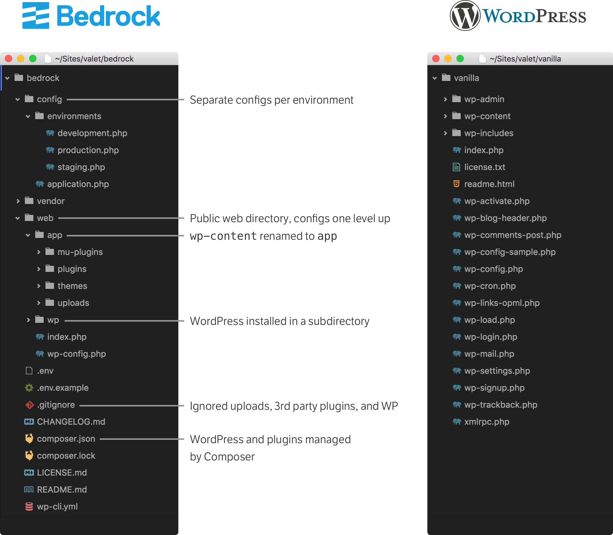

Starting a project
Requirements
- Git
- PHP >= 7.1.3
- WordPress (latest version)
- Composer
- Node.js >= 6.9.x
- Yarn
If these requirements don't already exist on your machine, they can easily be put there.
If your WordPress host doesn't support PHP >=7.0 or Composer, I recommend two possibilities:
- Kinsta, a managed WordPress host that offers WP-CLI, Composer, and more. It's fully compatible with both Sage and even Trellis deploys.
- DigitalOcean, a VPS provider that can get you a whole lot for only $5 a month.
Below we'll go over installing Composer, Node.js, and Yarn.
Local development environment
It's extremely important to have a local development environment setup under version control for developing WordPress themes.
 Every developer should be using version control on every project. It doesn't matter how large the project is or how many people will be working on it. If you aren't familiar with Git, see the Git Book.
Every developer should be using version control on every project. It doesn't matter how large the project is or how many people will be working on it. If you aren't familiar with Git, see the Git Book.
We strongly suggest that you use Bedrock as a base for all of your WordPress projects. Bedrock ships with a .gitignore file that has WordPress core, plugins, and uploads excluded from your repository.

If you're not using Bedrock, GitHub's WordPress .gitignore is a good .gitignore file to use for your project. It ignores the wp-content/uploads/ folder and other files that should be omitted from your Git repository.
Local environments usually fall under one of the following:
- Apache or Nginx, PHP, and MySQL on your host machine
- GUIs such as MAMP, DesktopServer, WAMP, and XAMPP
- Virtualized environment such as Vagrant
I prefer to use Trellis and Valet (macOS only) for my local development environments. I use Valet for test/personal projects, as well as smaller projects (or maintenance work) that I'm not responsible for hosting. I use Trellis for everything else.
For the best possible development and production parity, we recommend using Trellis for setting up a LEMP stack for WordPress. Trellis will get you set up with a local development environment using Vagrant.
You can take a look at roots-example-project.com to see a working example of a project using Trellis, Bedrock, and Sage all together.
You do not need Trellis or Bedrock to use Sage, but we do encourage MAMP and VVV users to look into Trellis for better parity between environments. You want to avoid any sort of situation where your theme breaks on production but it’s working on your local development setup.
Bedrock is also something we recommend using despite which WordPress theme you're using. Raspberry Pi, Snopes, JetBlue, and many more use Bedrock to help power their WordPress sites.
Command prompt
You’ll be using the terminal/command prompt throughout the development of the theme to perform basic tasks such as:
- Working with version control —
git - Changing directories —
cd(andpwdto show your current directory/path) - Copying files —
cp - Moving files —
mv - Using WP-CLI to manage your WordPress installation —
wp
In this book, the $ found at the beginning of lines within syntax blocks means you need to run the provided commands in your terminal. Make sure to exclude the $ when pasting or typing into the terminal.
A comment followed by @ and a path at the beginning of syntax blocks means you need to run the provided commands (or edit the specified file) from the specified path.
If you're on Windows you'll probably want to be using WSL. Brandon's Guide for Developing on Windows 10 Using WSL should help you get up and running with the necessary dependencies required by Sage.
Wes Bos has a great free video series for learning a modern command line workflow that’s worth checking out. Like Wes, I also use iTerm2 along with oh-my-zsh on my machine.
“I stick to the GUI myself far more than I’d care to admit. There’s a better way, a faster more efficient way to work with a computer, and you’ll be a better programmer all around if you learn some basic shell skills.” —Rob Conery, The Imposter's Handbook
Installing Composer
Composer is PHP's dependency manager. It's used to install Sage and to handle PSR-4 autoloading of the files that make up most of the functionality in Sage.
The download Composer instructions have commands to run to download the latest stable version of Composer.
If you're on macOS, I recommend following this route as opposed to using Homebrew to install Composer.
After running the commands from the Composer website, you'll find a composer.phar file in the directory you're in. In order to use Composer globally, move Composer into a directory that's in your PATH:
$ mv composer.phar /usr/local/bin/composer
You should now be able to run composer from any directory.
Installing Node.js
Node.js is used to handle front-end package management via npm as well as everything related to the front-end build process. Use nvm to easily manage Node.js versions from the command line.
After you've installed nvm, you can download, install, and use the latest Node.js:
$ nvm install 8.9.4
Once the installation has completed, you'll want to install yarn globally (a npm replacement we'll discuss later in this chapter):
$ npm install -g yarn
Code editor
The code editor you use isn't a big deal. I was previously a Sublime Text user but have been using Atom for the past year. I use the following packages:
- EditorConfig — Sage and our other projects use an
.editorconfigfile to help enforce spacing consistency - Emmet
- file-icons — Colored icons for different file extensions
- highlight-selected — Highlight currently selected word everywhere it appears within the file
- pigments — Display colors in files
- language-blade — Syntax highlighting support for Laravel Blade templates
PhpStorm is another editor of choice for several members of the Roots team.
I am guilty of not yet making the switch to VS Code, but the Switching to VS Code thread on Roots Discourse is filled with tips from the community.
Coding standards
Sage uses 4 spaces for PHP files, with the exception of template files, as it follows the PSR-2 coding standards. PSR-2 is the most widely used and accepted coding standard that is used in the PHP community.
“The rest of the PHP world is following PSR standards, and as we advocate best practices not just for WP but web dev as a whole, that’s what we decided to follow.” —Kalen Johnson
Two spaces are used for everything else, including Sass, JavaScript, and JSON.
Mark Otto, the creator of Bootstrap, has a well-documented code guide for front-end developers at http://codeguide.co/.
The code examples in this book follow these guidelines, including:
- Avoid superfluous parent elements when writing HTML
- Keep classes lowercase and use dashes for class names
- Keep classes as short and succinct as possible
- Use meaningful names; use structural or purposeful names over presentational
- Prefix classes based on the closest parent or base class
- Use soft-tabs set to two spaces
- Avoid unnecessary nesting
The .editorconfig file in the theme root is used to help inform your editor how to handle the various files:
# editorconfig.org
root = true
[*]
indent_style = space
indent_size = 2
end_of_line = lf
charset = utf-8
trim_trailing_whitespace = true
insert_final_newline = true
[*.php]
indent_size = 4
[resources/views/**.php]
indent_size = 2
Use the EditorConfig plugin for your editor to help enforce the spacing consistency in your theme.